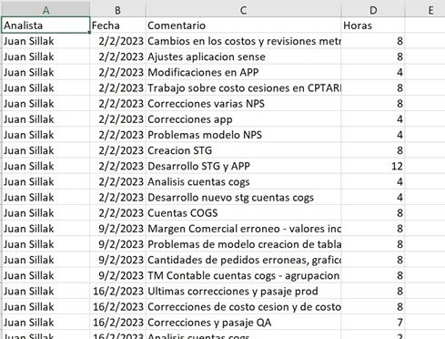
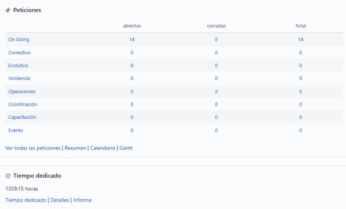

Sistema Actual
Actualmente tal tarea es llevada a cabo por los Technical Leaders y Team Leaders de la organización, quienes se encargan de registrar en un Excel las tareas llevadas a cabo por los consultores que tienen a su cargo.
Al final del mes, se realiza un pequeño informe con tal información. Cada Leader se encarga de generar el informe individual de cada Consultor a su cargo, lo que demanda mucho tiempo además de ser una actividad repetitiva.
